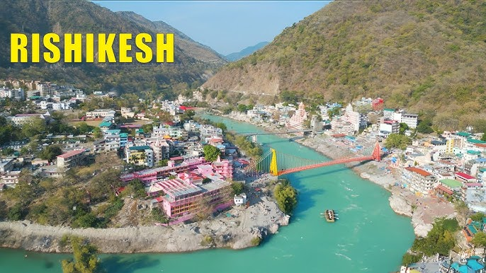
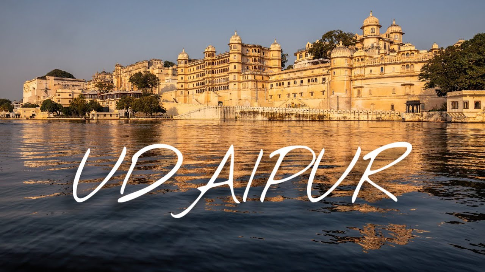

Rishikesh
It is associated with Ram. According to legend, hare he came on the advice of sage Vasishtha to do penance for killing Ravana. the king of Lanka. There are scores of ancient temples and ashrams affording spiritual solace to pilgrims, the important among them being temple of Bharata Pushkar temple, Shatrughan temple, Lahkhsmana temple, Geeta Bhawan and the Punjab Kshetra. Rishikesh, also known as the “place of sagas” is a spiritual town situated 24 kms upstream from Haridwar, at the confluence of the Chandrabhaga and Ganga.

Ooty
Ooty (Udhagamandalam), the "Queen of Hill Stations" in Tamil Nadu, is a premier tourist destination in the Nilgiri Hills at 2,240 meters, known for its pleasant 12°C–30°C climate, tea gardens, and colonial charm. Key attractions include the UNESCO-listed Nilgiri Mountain Railway, Doddabetta Peak, Botanical Garden, and Ooty Lake.

Udaipur
Udaipur, founded in 1559 by Maharana Udai Singh II, is a premier tourist destination in Rajasthan known as the "City of Lakes" and "Venice of the East". Famous for its stunning, interconnected lakes like Lake Pichola, the City Palace, and romantic ambiance, it serves as a historic hub of the Mewar kingdom surrounded by the Aravalli hills.